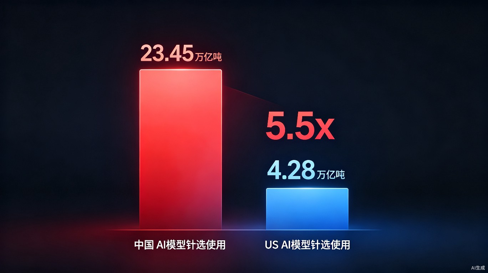

7月12号，OpenRouter发了一份周报。里面有一个数字，让我盯着屏幕看了好几秒。
6月29日到7月5日这一周，中国AI大模型的周调用量是23.45万亿Token。美国是4.28万亿。中国的调用量是美国的5.5倍。

更夸张的是全球排名。前五名里，中国模型占了四个。DeepSeek-V4-Flash连续七周霸榜，周调用量5.34万亿Token。小米MiMo-V2.5排第二，MiniMax M3排第三。只有Grok 4.5一个美国模型挤进了前五。
一年前，中国模型在全球的份额只有11%。现在超过了30%。不到一年翻了三倍。
很多人看到这组数据的第一反应是，中国AI崛起了。但说真的，我觉得这个判断不太对。
23万亿Token不是胜利宣言，是一面镜子。它照出的不是谁更强，而是谁更开放。
在聊判断之前，得先把数据来源说清楚。
OpenRouter是全球最大的AI模型API聚合平台。它的核心功能是让开发者通过一个统一的接口调用各种大模型——OpenAI的、Anthropic的、Google的、DeepSeek的、MiniMax的，全都有。开发者不用分别注册各个平台的账号，改一行配置就能切换模型。
所以OpenRouter上的调用量数据，反映的是全球开发者的真实选择。不是下载量，不是注册用户数，不是社交媒体热度。是真实的API调用，每一次都要花钱的。
换句话说，这是一份全球开发者用真金白银投出来的选票。
| 指标 | 中国模型 | 美国模型 |
|---|---|---|
| 周调用量（Token） | 23.45万亿 | 4.28万亿 |
| 占全球份额 | 50.2% | 9.2% |
| 环比增长 | +15% | 基本持平 |
| 全球前五占比 | 4席 | 1席 |
| 一年前份额 | 11% | 约45% |
这组数据的核心信息不是"中国赢了"。如果只看模型能力，GPT-5.6的Sol在MMLU、HumanEval等基准测试上仍然领先。Claude 4.5在企业级推理场景里仍然是首选。中国模型在部分指标上追平了，但在最前沿的能力上还有差距。
那问题来了：如果中国模型不是最强的，为什么调用量是美国的5.5倍？
第一个原因最简单，说出来你可能觉得太简单了，但就是这么简单——价格低。
中国头部模型跟OpenAI、Anthropic的技术差距，根据多家第三方评测机构的对比，大概在1%到4%之间。但价格只有对方的十分之一到四分之一。你是硅谷一家AI初创公司的CTO，每个月API账单几万美金，突然发现换成中国模型效果差不多、账单直接砍掉大半——这笔账不需要开会讨论。
第二个原因更重要——迁移成本几乎为零。
国产模型API兼容OpenAI格式。开发者换模型几乎不需要改代码，几行配置就能跑。以前切换模型意味着重新适配、重新测试、重新部署，现在改一个base_url就能切。这种低摩擦的切换，让开发者可以像换手机壁纸一样换模型。
第三个原因是最关键的，也是我想重点聊的——门开着。
DeepSeek没有GPT-5.6那样限量开放，也没有Claude那样强制实名。API开着，随便用，按量付费。DeepSeek-V4-Flash在OpenRouter上甚至有免费层，输入输出都是0元。你注册一个账号，创建一个API Key，直接就能跑。
对比一下美国这边的状态。OpenAI的GPT-5.6 API是限量开放的，不是你想用就能用。Anthropic的Claude在某些地区需要实名验证，Claude Code需要申请才能用。Google的Gemini虽然开放程度好一些，但部分高级功能也有门槛。
结果就是：当OpenAI和Anthropic在"把门关紧"的时候，DeepSeek的门开着，Token就涌进来了。
限量开放、强制实名、地区限制、申请审核。模型很强，但门上有锁。
API全开、兼容OpenAI格式、有免费层、无需审核。性能差1%-4%，价格低90%。
这里需要澄清一个常见的误解。很多人把调用量等同于" popularity "或者"市场份额"，但其实它反映的是一种更朴素的东西——开发者真的在用，而且用得很频繁。
23万亿Token是什么概念？假设每次对话消耗1万Token，那就是230亿次对话。一周。平均每天33亿次API调用。
这个体量，在全球范围内没有任何一个单一闭源模型能做到。不是能力问题，是开放程度的问题。
而且这还不是一次性脉冲。数据是连续十周增长，环比增长15%。这意味着趋势在加速，不是偶然。
更值得关注的是份额变化的速度。2025年11月，中国模型在全球的份额只有11%。2026年3月涨到约20%。2026年7月突破30%。按这个速度，年底有望冲击40%。
下载量可以刷，注册用户数可以买，但Token消耗量骗不了人。每一颗Token背后，都是一行真实被调用、被消耗、被拿来赚钱的代码。
聊到这，我知道你可能已经在想"中国AI是不是要统治全球了"。先别急着下这个结论。
调用量超过，不等于技术全面领先。在最前沿的模型能力上，美国模型仍然有一定的优势。GPT-5.6在多模态理解和复杂推理上的表现，Claude 4.5在企业级安全性和长文本处理上的积累，这些不是短期内能被价格优势抹平的。
中国模型在推理效率、多模态能力、安全对齐等方面也还有提升空间。差距在缩小，但缩小不等于消失。
而且西方厂商不会坐以待毙。OpenAI已经大幅降价了，GPT-5.6的API定价比Anthropic同级别模型低12%。Anthropic也在推出更便宜的版本。价格战的逻辑一旦被触发，所有人都会被卷进来。
但这里有一个更深层的趋势，可能比价格战更值得注意。
当全球开发者发现中国模型够好用、够便宜、够开放的时候，迁移的成本从"换模型"变成了"换生态"。那时候格局就更难逆转了。
第一个变量是K3和DeepSeek V4正式版。这两款模型都锁定在7月中旬发布。如果它们能在保持高性能的同时维持开放策略，中国模型在调用量上的领先优势还会继续扩大。
第二个变量是Google Gemini 3.5 Pro，定档7月17日。Gemini在开放程度上一直比OpenAI和Anthropic更友好，如果3.5 Pro在性能和价格之间找到一个更好的平衡点，它可能会成为美国模型中唯一能跟中国模型在调用量上抗衡的选手。
第三个变量是美国厂商的态度。OpenAI和Anthropic面临一个两难选择：如果继续限量开放，调用量会继续流失给开源/开放的中国模型；如果全面开放，又可能影响自己的商业模式和估值叙事。这个选择题没有标准答案，但选择本身会影响未来半年的格局。
说实话，如果你只是一个普通开发者，这组数据对你的直接影响可能比你想的更大。
第一，你的选择变多了。一年前你想用一个好模型，基本上就是OpenAI和Anthropic二选一。现在前五名里有四个中国模型可选，而且价格只有原来的十分之一。对于预算有限的个人开发者和小团队来说，这直接改变了AI能力的可及性。
第二，切换成本几乎为零。改几行配置就能从一个模型切到另一个，这意味着你可以根据具体任务选择最合适的模型，而不是被迫把所有事情都交给一个模型。写作用A，编程用B，分析用C——这种"模型分工"正在成为常态。
第三，竞争会让所有人受益。不管是中国的还是美国的，当模型之间的竞争从"参数竞赛"变成"性价比竞赛"的时候，最终受益的是用模型的人。 cheaper、 better、 more open——这三件事同时发生，对开发者来说是三赢。
回到开头那个数字。23.45万亿Token一周。
这个数字说明的不是中国AI在某个瞬间超过了美国。它说明的是，在全球开发者用真金白银投票的市场里，"开放"这个变量的权重，正在超过"最强"这个变量。
当性能差距只有1%到4%，价格差距却有5到10倍，开放程度的差距从"随时可用"到"需要申请"——开发者的选择就不难了。
这不是技术竞赛的结局。这只是生态博弈的序章。